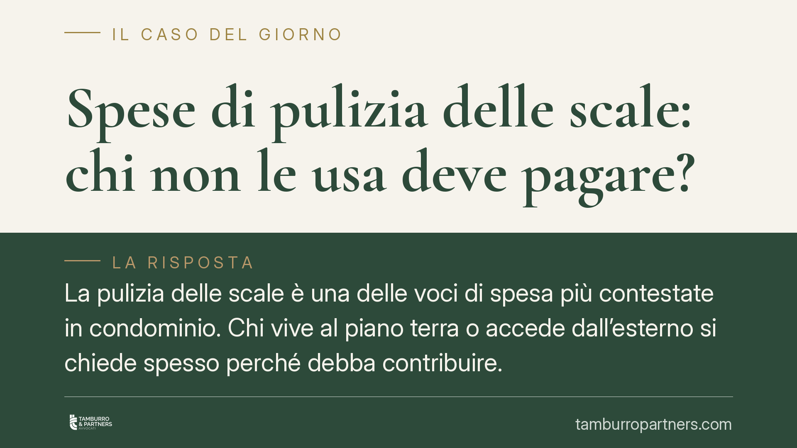

Spese di pulizia delle scale: chi non le usa deve pagare?
La pulizia delle scale è una delle voci di spesa più contestate in condominio. Chi vive al piano terra o accede dall'esterno si chiede spesso perché debba contribuire. La questione ruota attorno alla natura della spesa e ai criteri di riparto fissati dal codice civile. Facciamo chiarezza sui principi consolidati, evitando scorciatoie interpretative.

Il problema: una spesa d'uso, non di proprietà
La pulizia delle scale divide i condomìni più di quanto si immagini. Il punto di partenza è distinguere tra le spese legate alla proprietà di un bene comune e quelle legate al suo utilizzo concreto.
Le scale, infatti, servono a raggiungere i piani. Chi abita più in alto le percorre per intero; chi sta al piano terra o dispone di un accesso autonomo dall'esterno può non servirsene affatto. La ripartizione, quindi, non può ignorare l'uso effettivo.
Inquadramento normativo
Il riferimento centrale è l'art. 1124 cod. civ., che disciplina manutenzione e sostituzione di scale e ascensori. La norma prevede un riparto misto: metà della spesa in base ai millesimi di proprietà, metà in base all'altezza di ciascun piano dal suolo. In questo modo chi sta più in alto paga di più, perché "usa" una porzione maggiore della scala.
La pulizia non è espressamente nominata dall'art. 1124, che parla di manutenzione e ricostruzione. Tuttavia, secondo l'orientamento prevalente della giurisprudenza, anche la pulizia ha natura di spesa d'uso: deriva dal calpestio e dall'utilizzo quotidiano della scala. Per questa ragione si ritiene applicabile il medesimo criterio dell'art. 1124, in alternativa al riparto generale per millesimi dell'art. 1123 cod. civ.
È proprio l'art. 1123, secondo comma, a fornire la copertura di sistema: quando le cose comuni servono i condomini in misura diversa, le spese si ripartiscono in proporzione all'uso che ciascuno può farne. Da qui discende la possibilità di esonerare chi, avendo accessi esclusivamente esterni, non utilizza le scale.
Chi può essere esonerato
L'esonero non è automatico. Riguarda il condòmino che dimostri di non trarre alcuna utilità dalla scala: il caso tipico è l'unità con ingresso autonomo dalla strada, priva di qualsiasi collegamento con il vano scala comune.
Attenzione, però: anche chi raramente usa le scale ma potrebbe comunque servirsene (ad esempio per accedere al tetto, alla cantina o a un altro locale comune) non rientra nell'esonero. Ciò che conta è l'impossibilità oggettiva di uso, non la scelta personale di non utilizzarle.
Trasformazione delle soffitte e tabelle millesimali
Un tema collegato riguarda la modifica delle destinazioni d'uso. Se una soffitta viene trasformata in abitazione, cambia il carico di utilizzo delle parti comuni, scale comprese.
L'art. 69 disp. att. cod. civ. consente la revisione o la rettifica delle tabelle millesimali quando, per mutate condizioni di una parte dell'edificio, il valore proporzionale di un'unità risulti alterato di oltre un quinto. La trasformazione di un sottotetto in unità abitabile può rientrare in questa ipotesi, con conseguente necessità di aggiornare i valori. Si tratta, tuttavia, di una valutazione caso per caso, che richiede un'analisi tecnica dei millesimi.
Implicazioni pratiche
Per l'amministratore significa impostare il riparto distinguendo le spese d'uso da quelle di proprietà, verificando eventuali esoneri prima di approvare il bilancio.
Per il singolo condòmino significa non dare per scontato di dover pagare: se l'unità ha solo accessi esterni, l'esonero può essere richiesto. Allo stesso modo, chi modifica la destinazione di un locale deve mettere in conto una possibile revisione delle tabelle.
Cosa fare in concreto
- Verificare il criterio di riparto adottato in assemblea: controllare se le spese di pulizia seguono i millesimi puri o il criterio misto dell'art. 1124.
- Documentare l'assenza di uso: chi ha accessi solo esterni raccolga planimetrie e prova dell'inesistenza di collegamento con il vano scala.
- Sollevare la questione in assemblea, non in autonomia: l'esonero va deliberato o accertato, non deciso unilateralmente trattenendo i pagamenti.
- In caso di trasformazione di soffitte o sottotetti, far valutare da un tecnico se lo scostamento di valore supera il quinto previsto dall'art. 69 disp. att.
- Consultare un professionista prima di impugnare una delibera di riparto: i termini sono brevi e la ripartizione per uso richiede verifiche specifiche.
Disclaimer
Contributo informativo a cura di Tamburro & Partners Avvocati – Avv. Giuseppe Tamburro. Non costituisce parere legale.
Ogni condominio ha una storia a sé.
Se gestisci un'amministrazione e vuoi un confronto su una specifica questione condominiale, scrivi allo studio. Ti rispondiamo entro un giorno lavorativo.